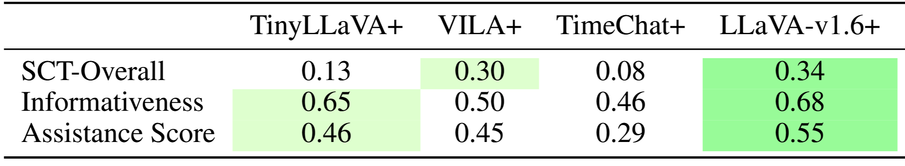

Our TIMELI task goes beyond standard video-based summarization and indoor navigation benchmarks for MLLMs—we uniquely emphasize spatio-temporal coherence and planning in delivering continual language instructions under dynamic, end-user interactive settings.
On this website, we provide additional details on:
(1) benchmark construction and formulation, including data generation, annotation, and quality validation processes;
(2) full prompt structure and experimental details, including metric definitions;
(3) model ablations and additional results, including a preliminary validation in closed-loop real-world settings,
leveraging a smartphone-based app instantiation (to be open-sourced) and generalization ablations on related real-world tasks to further study the benchmark's impact; and
(4) additional qualitative results, including both success and failure cases.
This video is divided into four key segments (please enable audio>):
0:03 – 0:39:TIMELI Benchmark – we show the collected data, which includes ground truth annotations.
0:40 – 1:12:ChatGPT-4o Performance – as you can hear, ChatGPT-4o gives redundant instructions, and some new instructions are issued before the previous ones finish, which may overwhelm the user.
1:13 – 2:05:Finetuned Model Performance – our model learns not only what to say but also when to say it. As demonstrated, instructions are delivered at appropriate times without redundancy.
2:06 – 2:57:Results on Real-World Videos – surprisingly, even when trained only in simulation, our model demonstrates strong generalization to real-world scenarios on YouTube videos.
TIMELI includes both a rule-based synthetic simulation benchmark and a human-annotated real-world benchmark, each developed and validated through iterative design.
Iterative Design with Orientation and Mobility (O&M) Guides:
We conducted a two-hour focus group with three mobility guides ($50/hr) on real-world guidance strategies (e.g., clock orientation, affirmations at intersections, silence otherwise).
Guides later supported blind participants remotely, emphasizing salient objects within cane range. While our focus was on cane users, guides noted guide dog users may also benefit from off-ground contextual cues.
We find that effective guidance requires fine-grained 3D scene understanding beyond simple turn/object classification, and that user-specific preferences motivate future personalization.
Synthetic Scenarios:
Using preliminary data, we designed navigation scenarios in CARLA and iteratively refined them with mobility guides.
We find that off-the-shelf models often issue repetitive, mistimed, or contextually incorrect instructions (as demonstrated in the video).
To address this, we designed a rule-based instruction generator that emphasizes concise, timely feedback—triggered by distance to landmarks, fixed intervals, or deviations >30° during crossings.
We sampled 1,000 clips using this procedure, validated and refined them with guides, and produced the final benchmark.
1.2 Adapting CARLA to Realistic Assistive Navigation Scenarios
We adapt CARLA to support rule-based instruction generation for assistive navigation, informed by real-world studies and feedback from O&M experts.
Pedestrians are equipped with egocentric sensors and randomized goals across varied towns and weather.
Sampling Realistic Paths:
We increase path diversity by sampling waypoints near buildings and curbs and adding noise to simulate veering, as shown in Figure 1.
Walkable regions are extracted using semantic maps, and route planning is handled with A* search. These paths generate video data at one frame per second, along with metadata such as obstacle type, location, and weather.
Instruction Generation:
Instructions are generated using a Compound Action Specification (CAS) based on user orientation, route progress, and environment context. Each instruction includes: Action, Direction, and Angle.
We add context with nearby object or landmark descriptions (e.g., “building on the right”) using nine object types: building, fence, pedestrian, pole, vegetation, vehicle, wall, traffic sign. Relative directions are: in front, left, right, slightly left, slightly right, around.
Objects within 1.5m (cane range) trigger instructions like: ''Continue walking forward. Be careful, pole in front. Then turn slightly left. Vehicle on your right.''
A bird’s-eye view (from segmentation and depth maps) helps calculate distances.
Event-Driven Navigation Prompts:
While on sidewalks, instructions are triggered when a turn is required or an obstacle is detected within 1.5m.
At junctions, minimal instruction is used to avoid distraction. Example prompts include: ''You are approaching junction in five meters.'', ''You have exited the junction.''
We also log the reasoning behind issuing or withholding instructions, such as obstacle detection, path turning, or being inside a junction.
Figure 1: Extracting Layout Details for Modified Pedestrian Paths. We extract walkable and
sidewalk space in the map, and employ it to sample waypoints nearby buildings and curbs. In
the figure, red denotes sidewalk space and white and green denotes road or obstructed space. The
sampled waypoints are then provided as intermediate goals to guide path planning for spawned
pedestrians during data collection. This ensures a realistic and challenging benchmark.
1.3 Real-World Video Annotation Process
Our in-situ dataset is a small, scenario-driven collection manually annotated by mobility guides. To improve generalizability, we expand our analysis using a larger dataset curated from publicly available outdoor walking videos, primarily filmed in U.S. locations and sourced from YouTube.
All original video links will be listed in our GitHub repository. We are committed to ethical data use and will promptly honor any takedown requests from original content creators.
To validate our model’s real-world transferability, we curated an additional test set using publicly available YouTube videos, annotated by human annotators.
As shown in Figure 2, we developed a custom annotation interface where annotators review videos alongside suggested instructions generated by GPT-4o.
The interface displays four consecutive frames (1 FPS), with the current frame on the left and the next three seconds to the right.
A text box shows the suggested instruction from GPT-4o, which annotators can edit for accuracy. The interface includes frame navigation buttons, keyboard shortcuts, an option to display 4 or 8 frames, and a GIF mode for dynamic visualization.
In total, we collected 10,000 annotated video clips for evaluation.
Figure 2: Annotation Interface for YouTube Videos We collect a diverse set of U.S.-based YouTube
videos and manually annotate them through the interface in a multi-round validation process.
2 Experimental Settings
2.1 Prompt and Input Settings
In-Context Learning Prompt for Off-The-Shelf Models:
We find that prompt design plays a crucial role in enabling models to understand the information needs of blind end-users.
In our baseline prompt for off-the-shelf model analysis, we provide goal coordinates (a 2D vector representing a relative target, see Section 3.1 of the main paper), along with instruction prompts guiding the LLM to generate navigation directions, as illustrated below.
You are guiding a blind person. The blind person needs to approach the goal
[x,y]={goal coordinate} located in relative longitudinal and latitudinal offsets in meters.
Generate an instruction for the current frame. You will need to provide step-by-step verbal
navigation instructions to help them reach the destination safely and efficiently.
Instruct the user to stay on the path to the goal, only notify what is
needed, including immediate turns they need to make and obstacles to avoid
within 1.5m (cane distance). Keep the instructions in junctions minimal for
safety to avoid distraction as the user relies on hearing to navigate and listen
to traffic. You should generally not instruct the user for consecutive frames
unless absolutely needed, and avoid too frequent instructions. Only return the
instruction to convey. Return “None” for remaining silent.
Examples:
Input: goal: [x,y]=[0,1], Output: Keep walking straight.
Input: goal: [x,y]=[0,1], Output: None.
Input: goal: [x,y]=[1,0], Output: Turn right and keep crossing.
Input: goal: [x,y]=[0.5,0], Output: Turn slightly right and keep walking. There’s a pole on your left.
Input: goal: [x,y]=[-1,0], Output: Turn to your nine and keep walking. There’s a pole on your right and vehicle on your left.
Input: goal: [x,y]=[-0.5,0], Output: Turn slightly left and continue walking. There’s a vehicle on your left.
Input: goal: [x,y]=[0,-1], Output: Turn around. There’s a fence on your left.
Basic Prompt for Fine-tuning:
To analyze the role of inputs to the model, we first fine-tune models with the basic prompt below, which contains the goal coordinate and instructions to guide users.
You are guiding a blind person. The blind person needs to approach the goal
[x,y]={goal coordinate} located in relative longitudinal and latitudinal offsets in
meters. Generate an instruction for the current frame. You will need to provide
step-by- step verbal navigation instructions to help them reach the destination
safely and efficiently. Instruct instruct the user to stay on the path to the goal,
only notify what is needed, including immediate turns they need to make and
obstacles to avoid within 1.5m (cane distance). Keep the instructions in junctions
minimal for safety to avoid distraction as the user relies on hearing to navigate
and listen to traffic. You should generally not instruct the user for consecutive
frames unless absolutely needed, and avoid too frequent instructions. Only
return the instruction to convey. Return “None” for remaining silent.
Prompt with History, Plan, and Reason Prediction for Finetuning:
The models denoted by
‘+’ are trained with the below prompt, which contains history, plan, information and prompting
instruction to predict reasons for the navigation instruction, as shown next:
<\p>
You are guiding a blind person. The blind person needs to approach the goal
[x,y]={goal coordinate} located in relative longitudinal and latitudinal offsets
in meters. The high-level plan: {plan}, needs to be followed safely. You have
conveyed the following instructions in the past: {history information}. Generate
an instruction for the current frame. You will need to provide step-by- step
verbal navigation instructions to help them reach the destination safely and
efficiently. Instruct instruct the user to stay on the path to the goal, only notify
what is needed, including immediate turns they need to make and obstacles to
avoid within 1.5m (cane distance). Keep the instructions in junctions minimal
for safety to avoid distraction as the user relies on hearing to navigate and listen
to traffic. You should generally not instruct the user for consecutive frames
unless absolutely needed, and avoid too frequent instructions. Only return the
instruction to convey. Return “None” for remaining silent.
Answer in JSON format. There should be a key “reason” and a key “instruction”
in the JSON.
{ “reason”: “One of the following: ‘remain_silent’, ‘remain_silent_in_junction’,
‘enter_junction’, ‘exit_junction’, ‘obstacle_in_front’, ‘constant_instruction’,
‘direction_change’, ’stop”’, “instruction”: “The spoken instruction provided to
the blind navigator corresponding to the specified reason”}
2.2 Metric Definitions
SCT, assistance score (AS)
Our rule-based instruction timing is consistent and event-driven, enabling models to learn accurate timing behaviors.
We evaluate this using a strict metric that checks whether model instructions occur within 1 second of ground truth cues, reporting F1 and AUC scores.
To reflect the safety-critical nature of some cues—e.g., late turn instructions risking collisions—multiple instructions within the window are counted as false positives.
We further report Safety-Critical Timing (SCT), which focuses on key events like collisions and junction transitions.
For each, if the closest non-silent instruction before or after the event correctly references it, it is considered correct.
SCT is defined as: SCT = N_correct-safety / N_total-safety, where N_correct-safety is the number of safety-critical events with correctly timed instructions, and N_total-safety is the total number of such events.
2.3 Realistic Closed-Loop Evaluation with Noisy Conditions
We evaluate model performance in a closed-loop manner by conducting interactive experiments and evaluations in a blind simulation environment.
In this simulation, an ego-centered walker executes instructions predicted by the model and follows the goal. To simulate realistic sensor measurements and account for real-world uncertainty,
we further add Gaussian noise to both the goal coordinates (Gaussian noise with mean = 0°, SD = 2.0m) and the pedestrian’s orientation (Gaussian noise with mean = 0°, SD = 5°).
3 Additional Experimental Analysis
3.1 Results Summary
Open-Loop Evaluation Summary:Figure 3 summarizes the performance of fine-tuned models on TIMELI in an open-loop simulation setting.
The results highlight key challenges in interactive decision-making: models frequently exhibit poor timing, confuse directional instructions (e.g., "left" vs. "right"), and tend to generate overly verbose responses.
Figure 3: Radar Plot for Fine-tuned Models in Simulation. We leverage the proposed video-based
assistive navigation task to evaluate multiple dimensions of instruction generation models.
By finetuning models on our TIMELI benchmark, we observe that existing models frequently make errors in
our navigation task, including timing of instructions (Timing), clarity and brevity of communication
(Conciseness), identification of the reason (Instruction Reason), appropriate silence in intersections
(Silence in Junction), accuracy in detecting relevant obstacles (Object Precision), and correctness of
direction (Instruction Direction).
3.2 Model Components Ablation
To evaluate the contribution of various components in our model—such as input instruction history, high-level navigation plans,
and reason prediction—we progressively add each element and assess performance in both open-loop and closed-loop settings.
The results show that each added component consistently improves the model’s performance across both evaluation modes.
In particular, adding direct supervision for reason prediction leads to a significant boost, helping the model better interpret and communicate the rationale behind navigation instructions.
3.3 Safety-Critical Timing Analysis
Certain mistimed instructions carry greater risk than others—for example, casual route reminders versus critical cues for entering junctions or avoiding imminent collisions.
Table 1 summarizes the closed-loop simulation results using the Safety-Critical Timing (SCT) metric, with a breakdown by event type. Notably,
LLaVA-v1.6+ correctly issues safety alerts in only 28% of collision events and 39% of junction events, underscoring significant challenges for reliable real-world deployment.

Table 1: Safety-Critical Timing Analysis. We report the overall SCT scores across MLLMs, along with event-specific SCT scores for each type of key event.
3.4 Inference Time
We evaluate the trade-off between inference time and model performance with and without the early exit mechanism.
The large LLaVA-v1.6 model has a runtime of 1.22 seconds per frame, while the tiny model runs at 0.77 seconds per frame.
With early exit enabled, we observe a significant reduction in inference time with minimal impact on performance—for example,
the large model’s runtime decreases to 0.99 seconds per frame, achieving an 18.85% speedup,
while key metrics such as route completion score in closed-loop evaluation remain unaffected.
3.5 Preliminary Smartphone-based Evaluation
Although the task remains challenging, we conducted a preliminary supervised user study with ten blind participants using a smartphone-based application to assess system performance and collect feedback.
Figure 4 shows the interface used in real-world closed-loop experiments, developed on iOS and integrated with the Google Maps API for route planning. Based on GPS data,
the system computes local goal positions and issues corresponding commands. A front-facing camera captures 60 FPS video, which, combined with positional data, is processed by a lightweight MLLM to generate navigation instructions.
Non-silent outputs are delivered via a text-to-speech engine. We tested three real-world routes: two 50-meter paths with one turn, and a 100-meter route with two turns and an intersection.
As shown in Table 2, the overall success rate was 40%, with most failures caused by static obstacles. Interestingly, dynamic obstacles (e.g., pedestrians, vehicles) often adjusted their paths,
reducing collision risk. While the system is not yet ready for unsupervised daily use, these early results demonstrate the potential of our MLLM-based navigation framework to support blind users and guide future improvements.
Figure 4: iPhone App Interface We validate our model in closed-loop, real-world settings using an
iPhone app instantiation. The app displays the front-view image on the left and the planned path to
the destination (via Google Maps) on the right. Instructions are shown at the top and also delivered
through audio.
Table 2: Smartphone-Based, Closed-Loop Real-World Study. We conduct a real-world study
using a smartphone-based system with ten participants. Each participant was instructed to walk along
a predefined route while strictly following the system’s spoken navigation instructions.
4 Additional Qualitative Results
Closed-loop Visualization: The results of our closed-loop experiments are shown in Figure 5. While failures do occur—such as users veering off the intended path—the models often succeed in guiding users back on track.
This recovery ability is likely attributed to the diversity in the training data, which includes variations in perspective and pedestrian path scenarios.
Figure 5: Closed-loop Visualization. We present success and failure cases from the closed-loop
navigation evaluation. The blue line shows the intended route, and the orange line shows the path a
follower walks based on the instructions of a TIMELI-trained model. For failure cases, the model
demonstrates an ability to recover from deviations by issuing corrective instructions. However, the
recovery process often incurs additional time, which can lead to failure to reach the destination within
the allotted time budget.
Open-loop Examples: The figures below illustrate model differences in open-loop navigation scenarios. In Figure 6 and Figure 7, we show qualitative comparisons between LLaVA-v1.6 (trained on our benchmark) and GPT-4o.
LLaVA-v1.6 exhibits better situational awareness, while GPT-4o tends to generate overly verbose and frequent instructions. Figure 8, Figure 9 and Figure 10 highlight successful predictions on real-world video data from both models.
However, as shown in Figure 11, LLaVA-v1.6+ still fails to guide the pedestrian correctly in some cases—failures also captured by our Safety-Critical Timing (SCT) metric.
Figure 6: Success Case in Simulation for LLaVA-v1.6+:
The LLaVA model successfully alerts the pedestrian upon entering a junction, remains silent while crossing, and then instructs them to turn right to avoid a nearby motorcycle.
In contrast, GPT-4o incorrectly states that the pedestrian is approaching the junction, even though they are already at it, and fails to provide further instructions in the final frame.
Figure 7: Success Case in Simulation for LLaVA-v1.6:
The LLaVA model alerts pedestrians that they are approaching a junction and warns them of an obstacle, offering timely and context-aware guidance.
While GPT-4o provides correct instructions, it issues them in every frame, leading to overly frequent and potentially distracting feedback.
Figure 8: Success Case in Real-World for LLaVA-v1.6:
In this real-world scenario, LLaVA effectively communicates information about the surroundings—including vegetation, fences, buildings, and pedestrians—while guiding navigation.
Although GPT-4o provides appropriate instructions as well, its verbose and continuous output in every frame results in distracting guidance.
Figure 9: Success Case in Real-World for LLaVA-v1.6:
In this scenario, LLaVA effectively instructs the pedestrian to stop before a junction as a car approaches, directs them to cross once it is safe,
and then alerts them to potential danger after crossing. While GPT-4o also provides appropriate instructions, its guidance is more verbose than LLaVA’s.
Figure 10: Success Case in Real-World for LLaVA-v1.6:
In this scenario, LLaVA effectively instructs the pedestrian to stop before a junction as a car approaches, directs them to cross once the car has passed, and then alerts them to potential danger after crossing.
Although GPT-4o also provides appropriate instructions, its guidance is more verbose than LLaVA’s.
Figure 11: Failure Case in Real-World for LLaVA-v1.6 and GPT-4o:
In this scenario, LLaVA correctly notifies the pedestrian about entering a junction but mistakenly directs them to move forward despite an approaching car.
GPT-4o successfully instructs the pedestrian to stop but then inconsistently tells them to proceed in the intermediate frame.